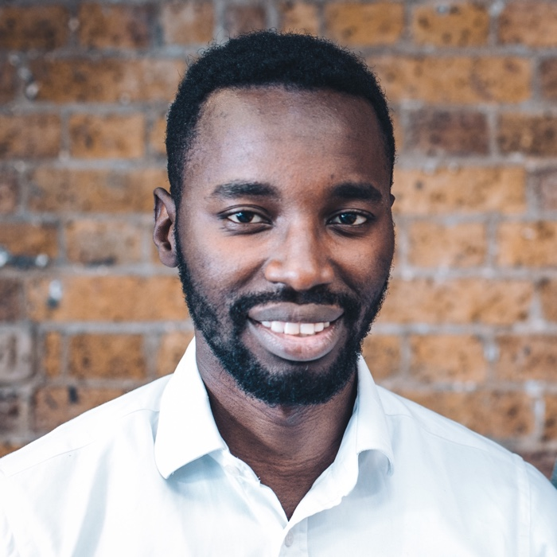

Team
Tomide
Co-Founder and CEO

Electronic systems engineer with a Master’s from the University of Leeds. He spent over four years building high integrity AR displays for pilots at BAE Systems. His expertise in complex systems design is central to Circuit Mind’s technology.
Basilio
Co-Founder and CTO

Has two Master’s degrees, including one in Electrical Engineering, and a PhD from ETH Zurich with a focus on mathematical algorithms for complex systems. His mastery of high-performance algorithms is at the core of Circuit Mind’s solution.
Peter
Software Engineering Intern
Third-year Electrical and Electronic Engineering student at Imperial College London, with a passion for electronics, software and machine learning. Such unique combination of skills is invalubale for the development of Circuit Mind's techology.